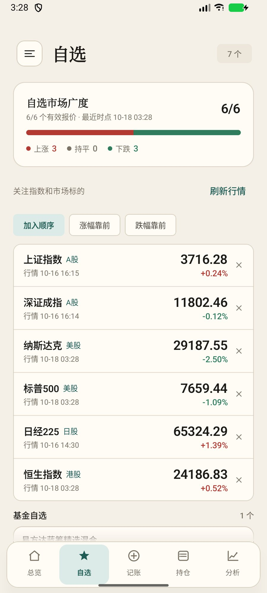
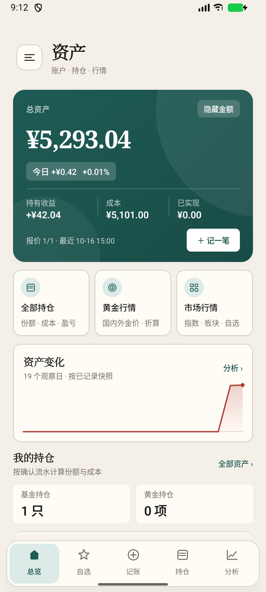
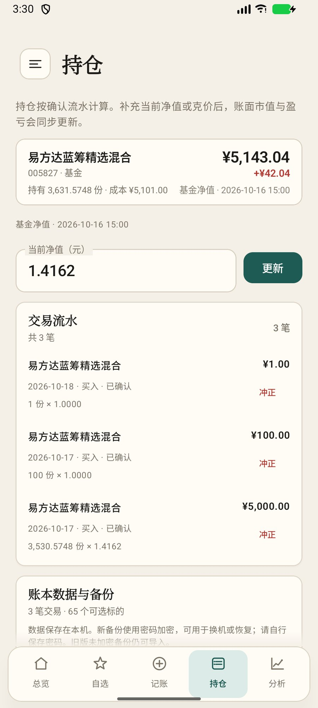
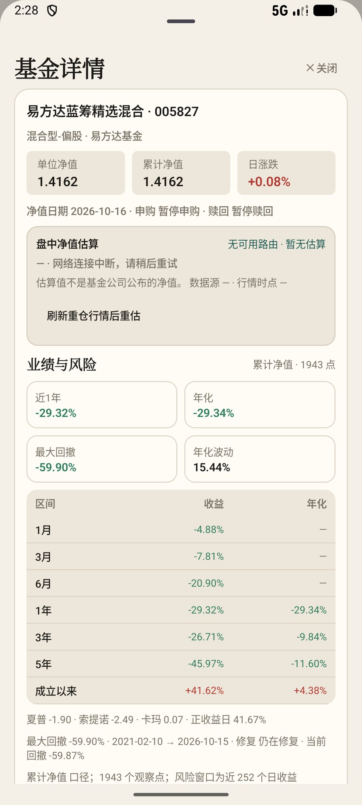
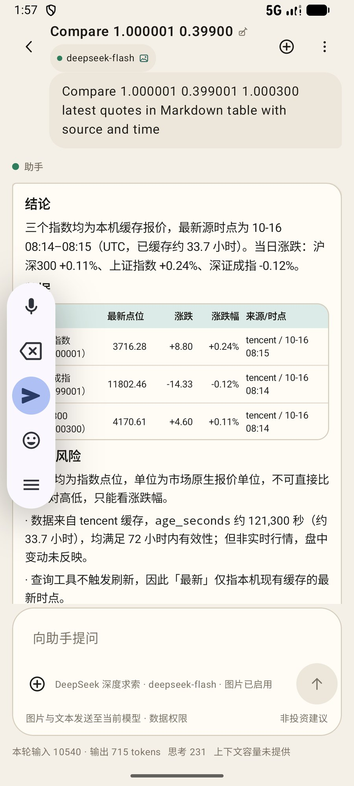
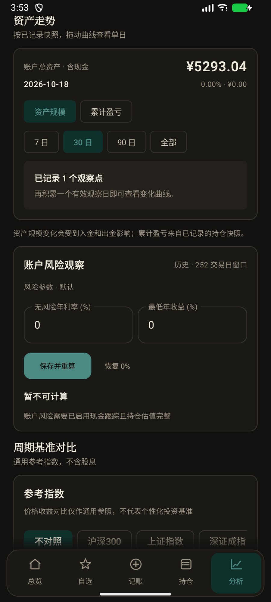

自选就一张表。
最新价、涨跌幅、来源时间排在同一行；点一行看详情，右侧的小叉移除。

ANDROID · 本地账本
基金、黄金和现金流水，都记在一本加密账本里。 收益按真实交易算，行情保留来源和时间。 需要解释时，再让 AI 读这些数据。 账本保存在手机里。不托管资产，不下单，也不推荐买卖。

买入、赎回、分红、红利再投、拆分、转账和出入金都能记。 补录旧交易时选真实日期，相关日期的持仓和收益会重新计算。
SQLCipher 加密账本文件，密钥交给 Android Keystore。
补一笔旧交易，相关日期的观察点和收益会按历史重算。
入金、出金、分红、买卖对现金的影响，都能在流水里看到。


阶段收益、年化、最大回撤、波动率，以及夏普、索提诺和卡玛。 每个数字都写明口径；样本不够时显示“暂不可算”。
风险指标需要足够样本；没有数据时不补零。
回答分成四块：结论、数据、风险或结构、数据缺口。多项对比用表格， 持仓写明来源和时间，不写成一大段文字。
能判断的一句话。
事实卡、表格、来源与时点。
缺数据就说缺，不编。
使用你自己的模型 API Key。关闭“发送持仓明细”后，不会发送历史对话。 模型仍可能答错，以数据和来源为准。

行情、自选和提醒都在手边；长期留下的，是自己的持仓和流水。
最新价、涨跌幅、来源时间排在同一行；点一行看详情，右侧的小叉移除。

价格、涨跌幅、报价过期、持仓盈亏。每条提醒都有来源和时间，不催你交易。
“这是记录，不是操作建议。”
产品原则 · 不推荐买卖导出的备份用你的密码加密；恢复时先解锁，再确认覆盖。
浅色和深色用同一套账本字段；截图来自开发版，数字是测试账本。

它不替你赚钱，也不替你判断。把账记清楚，把来源留下，方便你自己核对。
ANDROID 安装包
下载 Android 安装包，或先看源代码。更新会校验 SHA-256 和签名，签名不一致会拒绝安装。
微信内置浏览器可能拦截 APK。请点右上角 ···，选择“在浏览器打开”后再下载。
账本、流水、快照和设置保存在 Android 本机的加密数据库里，密钥由 Android Keystore 封装。没有账号，持仓不会自动同步到服务器。使用 AI 时只发送当前问题和你允许的内容。
不会。它只整理事实、来源、时间和风险，不提供买卖建议，也不接入交易下单。示例数字不代表未来收益。
不保证。估值依赖净值、基准行情和披露持仓；数据过期或样本不足时会显示“不可用”。估值不是基金公司公布的净值。
在“关于与更新 → 账本数据与备份”里导出加密备份，再在新设备导入并输入同一个密码。密码不会保存，丢失后无法恢复。系统云备份和换机迁移不包含账本文件。
先确认系统允许本应用“安装未知应用”。如果提示签名不一致，不要直接卸载旧版：先在旧版导出加密备份，再卸载、安装新包并恢复。应用不会绕过系统安装确认。
页面托管在 GitHub Pages，大陆访问可能不稳定；下载区提供 gh-proxy、ghfast、ghproxy.net 三个镜像，文件完全相同。若页面打不开，可以直接访问 GitHub Release 下载 APK。
目前只做了 Android 应用。先把账本、基金业绩和 AI 问答做扎实；iOS 和平板还没做。